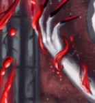

Markings of submission and fury. Power taken from the weak.
Tier 1: Sire’s dark bargain.My generosity is unparalleled, my grace unmatched. Bask in the droplets of our bargain, and slaughter in my name.(This, as well as the names of your abilities are etched in Deep Speech onto your body) |
|
Torrents of Blood, for a mere taste of my power.Before you attack an enemy with an attack you can use your reaction to activate the pendulum tattoo, sending a large portion of your blood to the Sire. You reduce both current an maximum HP and add that number to the damage of the attack. Lost Health is restored not fully at the end of the long rest. You can only recover maximum HP by spending your hit die, which will restore maximum health, as well as current. |
My righteous anger, generously given to weak.You can rage unlimited number of times. To dismiss your rage however you need to use a bonus action. When you rage you can choose to give into Sires bargain. This will create an effigy of your blood, with the appearance of the Sire, which will perform its Condemnation attack as a part of your attack action. Invoking the Sire will give you 2 levels of exhaustion. Condemnation Range 10 feet To hit bonus is equal to double your number. On hit deals 2d12+8 magical slashing damage, and heals you for half of that amount. This healing will restore your max HP if it was reduced. |
Tier 2: Patience of the sireYou remember the first slaughter, yes? The burning, cutting torrents of blood and your delightful grin reveling in the carnage. Your sire was ever patient, allowing you to satiate the bloodlust, as you will his... |
|
Remember my patience, never make me wait.At the end of your turn if you are raging, you lose 1 max HP but gain +1 to damage of Sires effigy until it is dismissed. |
|
Tier 3: Ambitions of the Sire.What can you even understand of my desire, of my ambition. My aspirations lie far beyond your meagre displays of service. All your lives, deaths, bodies... blood, are but a resource in MY game. Never lose sight of your station, never let your ambition come out of the eclipse of my own. |
|
Your body, my choice! MY direction! MY ASPIRATION!After donating any amount of blood to the sire via “Torrents of Blood, for a mere taste of my power” you gain a charge of this ability until the next long rest. You can expend a charge as a reaction to the attack launched against you. If you are raging and Sires effigy is up, it will block the attack, reducing the damage by the amount donated. |
Soon I’ll sire over all.Whenever you slay a powerful vampire, your Max HP is increased by 1d12. |
Tier 4: Long forgotten powerAlarik, do you feel this? My blood coursing through your veins. The burning sensation enveloping your very being, pain that never seizes, rage never to be quenched, and service never fulfilled. With these few droplets you will become one of my court, protected by my grace. Now, drink, become whole again....Alarik’s mind darkens for a fleeting moment, but for that moment he feels fearless again. Scars of a soldier closed, alongside the wounds of body. But the piece dissipated, leaving behind phantoms of the past, now distant... like dreams. Why, were you always bound to war? Why can you never be content without agony, both given and taken? You reject MY gift? No, this isn’t right... Sire with a swift lunge grabbed Alarik, lifting him like a weightless doll. You are not normal... A beast by birth, inherent... immortality. For a second, eyes of the Sire, coloured with artificial compassion lit up in curiosity. Listen to it once, for it wont be repeated. You have just sped up my plans by a millennia, and for that, you will have my gratitude. I will make you my attack dog, a creature more dangerous than any sired by ME. A living weapon, an echo of old. Now drink, become whole again. Sire forced Alarik on his knees, beneath him. With a black dagger, he slashed his wrist, dark, viscous blood flowing onto the soldier’s face, at first young Human desired to resist, but the texture awakened something primordial within him. As Alarik opened his mouth, he let a few droplets in, embracing the euphoric sensation, as more and more flowed into him, satiating the inherent thirst. Like a king standing above a knighted crusader Sire smirked, his pale face painted with a grimace of delight. -A man no more, for a beast is what you will always be! |
|
 Your own veins, overflown with my essence.If you are bleeding, or if you use a bonus action to cut your wrist and take 1d6 slashing damage you can decide to drink your own blood, feeding the slumbering savage sickness. Upon doing that, you gain all the features of a lvl 20 barbarian, temporary HP equal to 50+ 5 times the max HP you have missing, all the damage you deal is doubled and ignores resistances, you lose all the exhaustion points you have and at the start of your turn you gain 1 point of exhaustion, without incurring any penalties from those. Once you gain 5 points of exhaustion, you lose all the benefits, and immediately go into a dying state, unable to be healed for more than 1 HP. If you use this ability more than once per week, you have an 75% chance to lose yourself to the beast forever. |
Drink your fill, for tomorrow you slaughter againYou can drink mortal blood as a bonus action, gaining temporary HP equal to the last instance of damage you dealt. |
Tier 4,5: The Big CheeseYou know Alarik... I am deeply grateful for what you did to my family. Now we can become the biggest cheeses in buisness... For that I would offer you a hand of one of my three-hundred seventy four daughters, were you a rat. But be here, child. You are family regadless. And you are always welcome in the house of Don Big Cheese. |
|
La FamiliaYou are friends with the big cheese family, after you fed sire's blood to a rat. Wherever there are rats, there is a 15% chance to be a member of The Big Cheese vampiric family. If they are there, you can recognise them and talk through "Speaking with animals" and they will give you info on the area they know. |